Linux文件管理基础（二）
文件处理命令
1、查看文件内容
cat命令
命令：cat
作用：查看文件内容
语法：
# 读取文件内容
cat yuchao666.txt
注意：
cat 命令是一次性把文件内容全部读出来，即使yuchao666.txt文件里有十万条数据，也是全部读取显示.
会有什么问题？
一下你的电脑屏幕输出了十万条数据，首先你压根看不到需要的信息，并且你的机器可能卡死。
因此cat不适合读取大文件，适合阅读内容较少的文件。（当然可以结合其他linux命令，二次加工）
[root@localhost opt]# cat chaoge.txt
qweqwe
# 读取系统中默认配置文件
# 读取网卡配置文件
[root@localhost opt]#
[root@localhost opt]# cat /etc/sysconfig/network-scripts/ifcfg-ens33
TYPE="Ethernet"
PROXY_METHOD="none"
BROWSER_ONLY="no"
BOOTPROTO="dhcp"
DEFROUTE="yes"
IPV4_FAILURE_FATAL="no"
IPV6INIT="yes"
IPV6_AUTOCONF="yes"
IPV6_DEFROUTE="yes"
IPV6_FAILURE_FATAL="no"
IPV6_ADDR_GEN_MODE="stable-privacy"
NAME="ens33"
UUID="2f548dc3-8cf4-410d-9cc4-c8bf3394e8dd"
DEVICE="ens33"
ONBOOT="yes"
读取且合并
cat命令可以读取文件内容、结合重定向符号，可以合并多个文件内容。
# 依次读取每一个文件的内容，依次写入all.txt
[root@localhost opt]# cat chaoge.txt hello.txt world.txt > all.txt
[root@localhost opt]# cat all.txt
chaoge 666
hello
world
more分屏命令
作用：分屏查看文件内容，一般用于读取较多内容文件，如小说文件。
特点：more和cat一样，会一次性读取文件所有内容，放入内存中，比较消耗资源，不适合太大文件。
语法：
more yuchao666.txt
使用more很简单，主要是像学vim一样，进行少量的指令操作。
more 命令的执行会打开一个交互界面，下面是一些常用交互命令：
| 回车键 | 向下移动一行。 |
|---|---|
| d | 向下移动半页，移动屏幕显示的一半。 |
| space空格 | 向下移动一页。 |
| b | 向上移动一页。 |
| / 字符串 | 搜索指定的字符串。 |
| :f | 显示当前文件的文件名和行号。 |
| q 或 Q | 退出 more。 |
| 上下移动 | 没有该功能 |
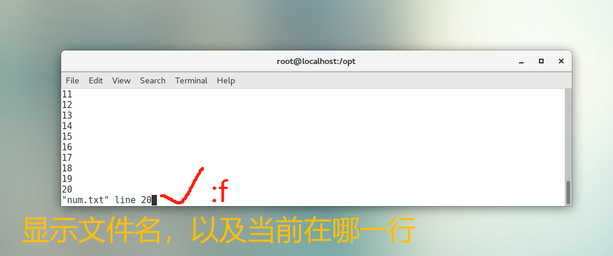
less命令
作用：和more一样，分屏读取文件
特点：不是加载整个文件，而是读多少，加载多少，读取大容量文件是很合适的。
语法：
less yuchao666.txt
和more一样，也需要通过指令控制，也是一个交互界面，指令一样。
| 回车键 | 向下移动一行。 |
|---|---|
| d | 向下移动半页，移动屏幕显示的一半。 |
| space空格 | 向下移动一页。 |
| b | 向上移动一页。 |
| / 字符串 | 搜索指定的字符串。 |
| :f | 显示当前文件的文件名和行号。 |
| q 或 Q | 退出 more。 |
| 方向键 | 可以上、下移动 |
cat、more、less对比
| cat | more | less | |
|---|---|---|---|
| 特点 | 显示小文件(一屏以内) | 显示大文件（超过一屏） | 显示大文件（超过一屏） |
| 交互命令 | / | 有 | 有 |
| 上下键翻行 | / | / | 有 |
head命令
作用：显示文件前N行
语法：默认显示前10行，可以传入数字参数
head yuchao666.log
案例
# 默认显示
[root@localhost opt]# head num.txt
1
2
3
4
5
6
7
8
9
10
# 指定行
[root@localhost opt]# head -5 num.txt
1
2
3
4
5
tail命令（重点）
作用：tail是从结尾看，也可以指定行号，因为是文件结尾，也就是最新的数据，工作里常用来tail查看日志，以及持续检测日志文件内容变化，使用很多。
语法，参数：
# 默认后10行
tail yuchao777.log
# 后4行
tail -4 yuchao777.log
# -f 当文件增长时,输出后续添加的数据
tail -f yuchao777.log
案例
[root@localhost opt]# tail num.txt
41
42
43
44
45
46
47
48
49
50
# 后4行
[root@localhost opt]# tail -4 num.txt
47
48
49
50
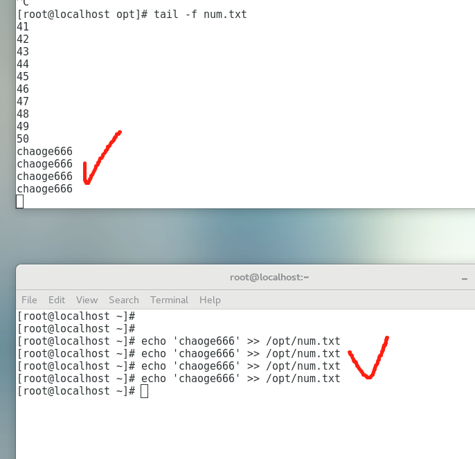
退出tail -f
使用ctrl + c 快捷键可以退出，表示cancel（取消），大多数linux下的操作，都可以用ctrl + c强制结束。
2、统计文件信息
wc命令
命令：wc（word count）单词统计
作用：用来统计文件内的信息，一般统计如（行数、单词数、字节数）
参数，语法
-l：表示lines，行数（以回车/换行符为标准）
-w：表示words，单词数 依照空格来判断单词数量
-c：表示bytes， 字节数（空格，回车，换行）
用法
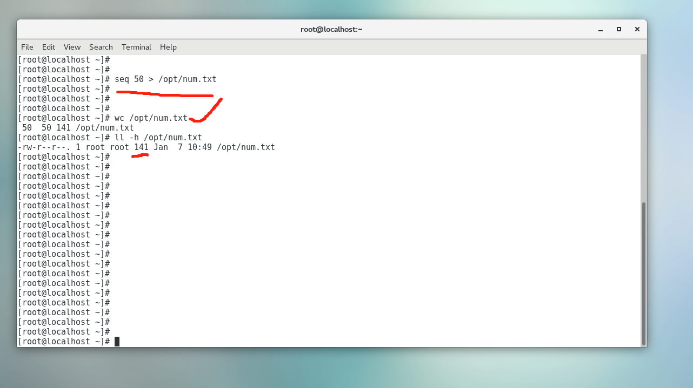
增加字符，没有换行
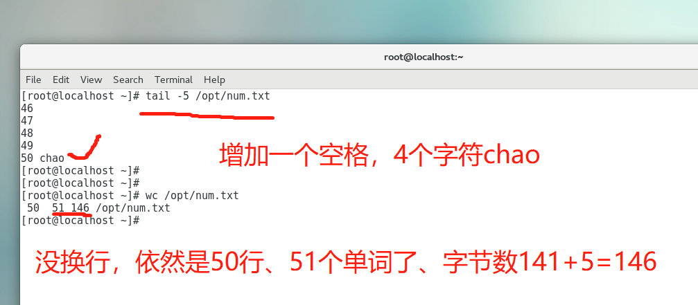
du命令
作用：查看文件或目录(会递归显示子目录)占用磁盘空间大小
语法：du [参数选项] 文件名或目录名
常见参数：
-s ：summaries，只显示汇总的大小，统计文件夹的大小
-h：表示以高可读性的形式进行显示，如果不写-h，默认以KB的形式显示文件大小
案例
[root@localhost ~]# echo chaoge{1..5000000} >> num.txt
# 查看大小的方式 ll -h
[root@localhost ~]# ll /opt/ -h
total 66M
-rw-r--r--. 1 root root 66M Jan 7 11:04 num.txt
# du查看，显示kb单位
[root@localhost ~]# du /opt/num.txt
67276 /opt/num.txt
# 友好显示
[root@localhost ~]# du -h /opt/num.txt
66M /opt/num.txt
# 显示文件大小总和
[root@localhost opt]# ll -h
total 198M
-rw-r--r--. 1 root root 66M Jan 7 11:04 num.txt
-rw-r--r--. 1 root root 66M Jan 7 11:09 num.txt.1
-rw-r--r--. 1 root root 66M Jan 7 11:09 num.txt.2
# 方式一
[root@localhost opt]# du -sh /opt/
198M /opt/
# 方式二
[root@localhost opt]# du -sh .
198M .
# kb单位
[root@localhost opt]# du -s .
201828 .
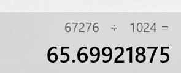
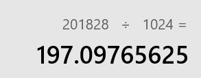
1.工作里，经常可能会因为某些文件过大，导致磁盘空间不够
2.比如长时间机器运行，生成了过多的日志，也需要定期+删除，释放磁盘空间。
[root@localhost opt]# du -sh /var/log
8.2M /var/log
批量统计，文件大小
[root@localhost opt]# du -h *
66M num.txt
66M num.txt.1
66M num.txt.2
3、文件查找
find命令（重点）
作用：用于搜索整个linux系统中的文件、文件夹，便于你找出机器上的文件。
语法：
find 搜索路径 选项1 选项1的值 选项2 选项2的值
find命令参数特别多，我们逐步深入学习，先了解最常用的参数。
-name 指定文件名字，指定你要搜索的文件名字叫什么
以及可以填入 * 表示通配符，模糊搜索
-type 指定文件类型，文件还是文件夹，还是其他
一般的值有 f(file)找文件类型，d(directory) 文件夹类型
-o 或者的意思
[root@yuanlai-0224 ~]# find /var -name '*.txt' -o -name '*.log'
/var/log/tuned/tuned.log
/var/log/audit/audit.log
/var/log/anaconda/anaconda.log
/var/log/anaconda/X.log
/var/log/anaconda/program.log
/var/log/anaconda/packaging.log
/var/log/anaconda/storage.log
/var/log/anaconda/ifcfg.log
/var/log/anaconda/ks-script-QsGz2Q.log
/var/log/anaconda/ks-script-e5LS4J.log
/var/log/anaconda/journal.log
/var/log/boot.log
/var/log/vmware-vmsvc.log
/var/log/yum.log
/var/cache/yum/x86_64/7/base/mirrorlist.txt
/var/cache/yum/x86_64/7/timedhosts.txt
/var/cache/yum/x86_64/7/extras/mirrorlist.txt
/var/cache/yum/x86_64/7/updates/mirrorlist.txt
简单用法
小范围搜索、找出yu.txt
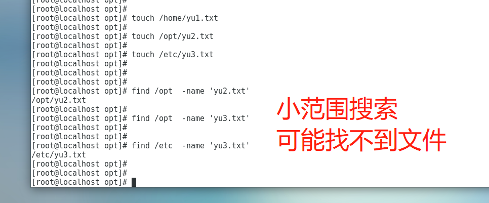
大范围搜索，从根目录搜索，找出yu3.txt
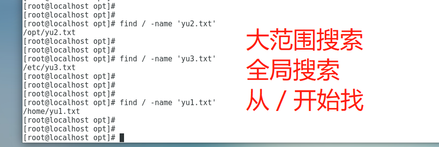
限定搜索文件的类型，加上-type参数
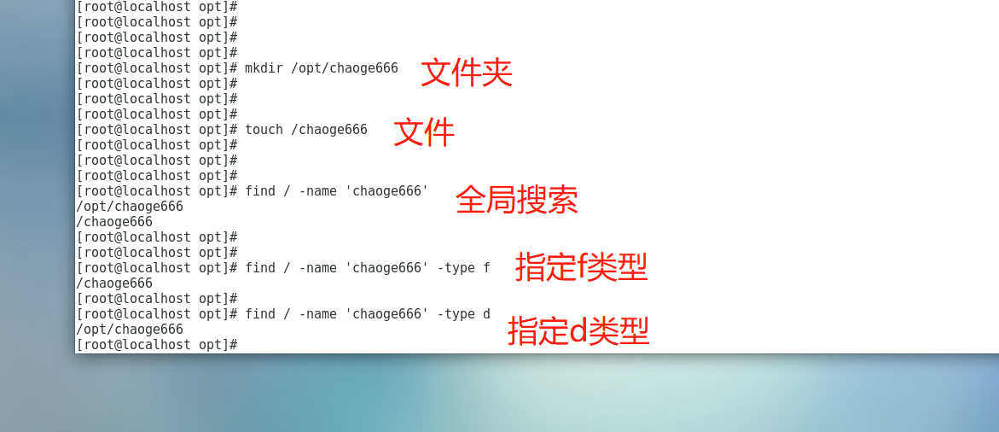
复杂用法
上面都是精确查找，找出xx文件，还可以模糊查找，比如，找出linux上所有的
.txt后缀的文件。
全系统搜索，模糊搜索，找出系统里的txt文件，注意得有类型限制
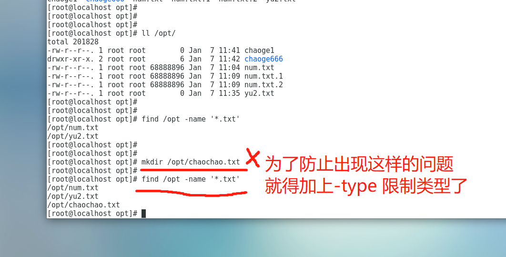
加上类型限制，找出系统上所有txt文件。
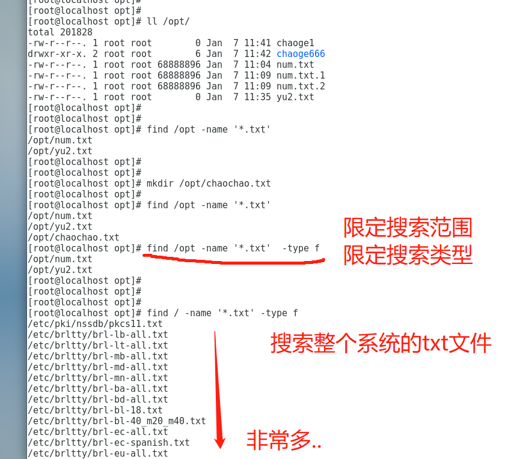
同理，找出系统上所有log类型，日志文件
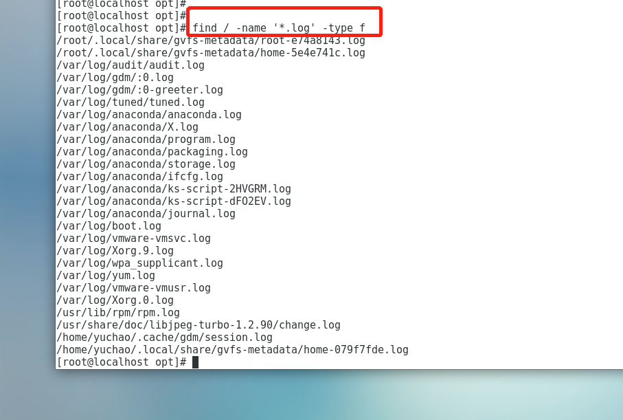
找出某个路径下，所有的文件夹
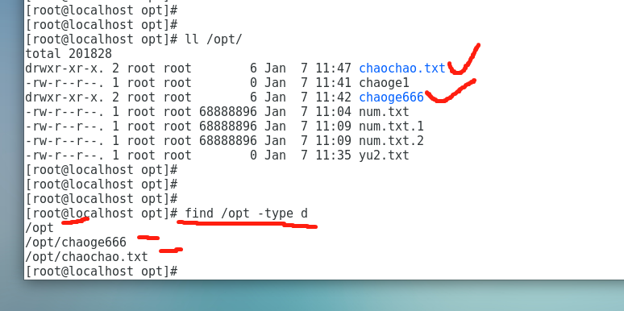
找出某个路径下，所有的文件
[root@localhost opt]# find /opt -type f
4、文件内容查找
grep命令（重要）
我们很多时候，想直接搜索文件中的一些信息，前面学了可以使用如vim的搜索功能，但是多少不太方便，你还得打开文件。
比如你要搜索某一个配置文件，里面是否写入了一个配置参数，如
bind 0.0.0.0那就可以利用grep找一找，文件中是否有
bind 0.0.0.0这个信息。
grep作用：直接在文件中搜索出你想要的数据，且显示。 语法，用法
grep '查找的内容' yuchao666.txt
准备用于测试的数据
[root@localhost opt]# cat yuyu.txt
I teach linux.
I like python.
My qq is 877348180.
My name is chaoge.
Our school website is http://yuchaoit.cn。
Where is my girl friend.
Who is your boy friend.
My phone number is 15233334444.
基本用法
查找哪些文本行包含了 My，注意是linux是严格区分大小写的
大写字母
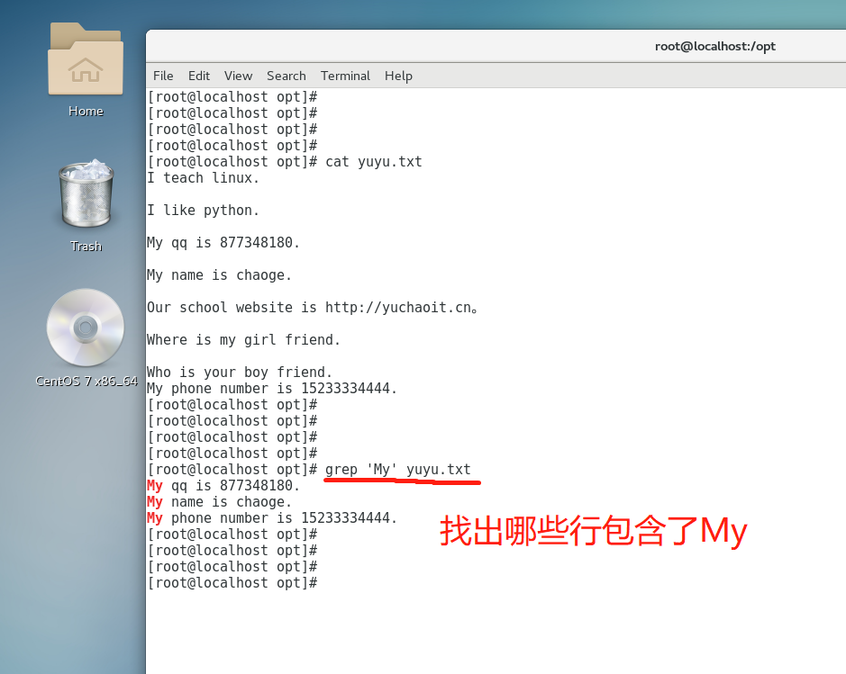
小写字母
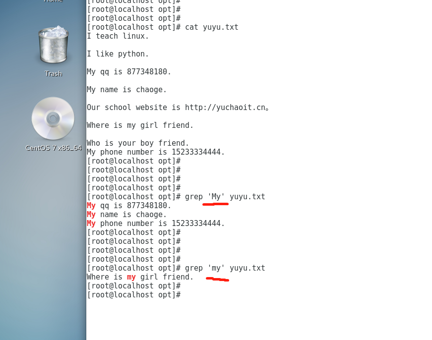
搜索系统日志文件
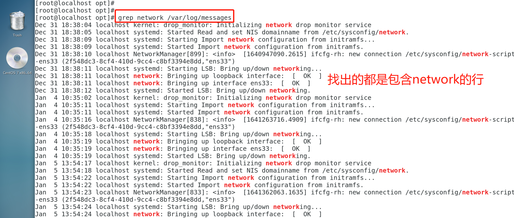
在多个文件中，搜索信息
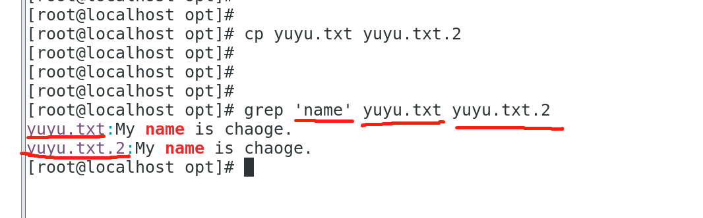
忽略大小写 -i参数
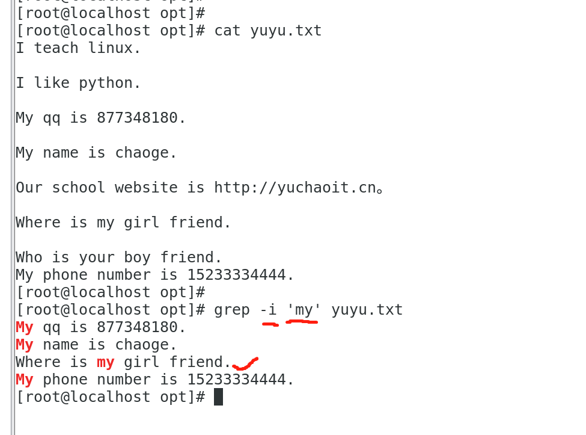
5、输出重定向
命令：输出重定向，表示linux下的两个符号
> 标准输出重定向。覆盖输出，覆盖掉原先的文件内容
>> 追加重定向，追加输出，不会覆盖原先文件内容，会在文件末尾追加内容
怎么记忆
6>5 6大于5
> 输出覆盖重定向 ，一个大于号
>> 追加输出重定向，俩大于号
语法：
用法1：
命令1 > 覆盖输出结果
用法2：
命令2 >> 追加输出结果
覆盖输出重定向
命令执行多次，结果反复被覆盖。
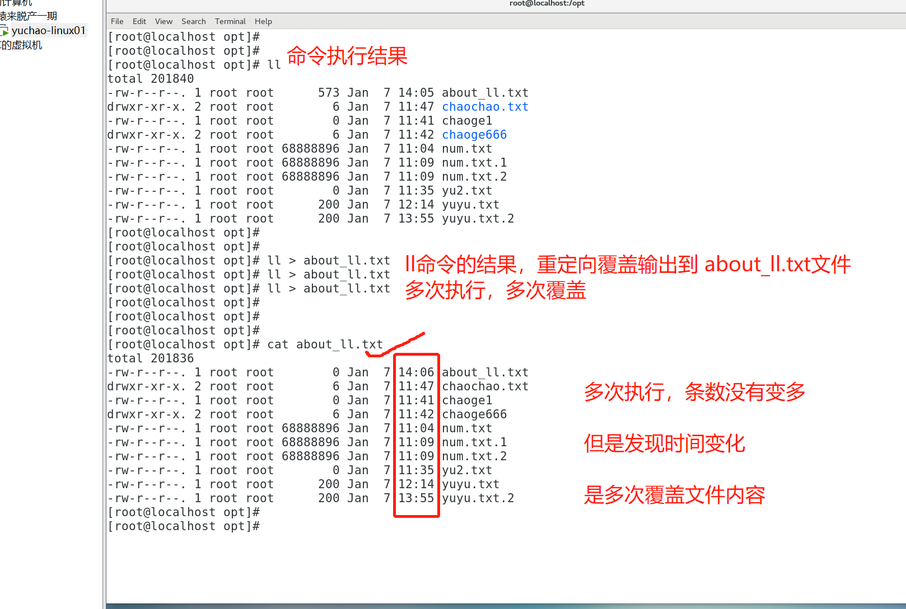
追加输出重定向，俩大于号
5.1 echo命令
echo命令，用于打印、显示文本
用法很简单，对文本输出
[root@localhost opt]# echo 'chaoge 666'
chaoge 666
[root@localhost opt]#
[root@localhost opt]# echo chaoge linux 666
chaoge linux 666
5.2 echo结合重定向
echo 一般用于把文本信息，写入到文件中（可自动创建文件）
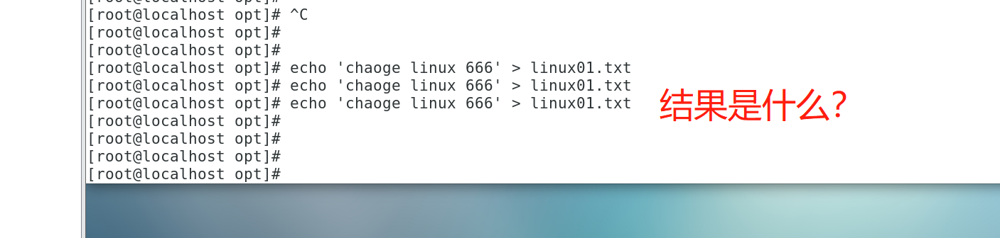
看图回答
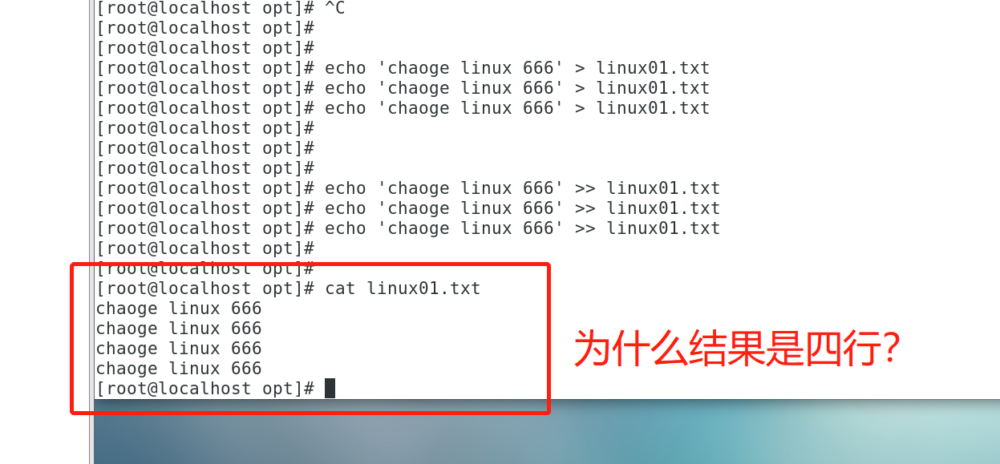